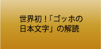
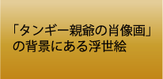
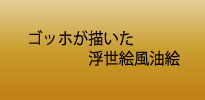
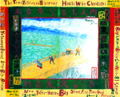
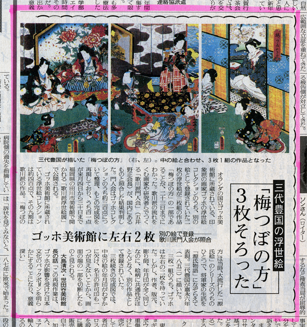

|  |  |  |
ゴッホが愛した歌川派（浮世絵）美術館のご案内 |
|||||
当美術館では、世界的に有名な画家ヴィンセント・ヴァン・ゴッホ（1853-1890・オランダ生ま れ）が生前コレクションしていた江戸時代の浮世絵と同一絵柄のオリジナル作品を展示。 ゴッホが所有して消失した重要な浮世絵を再発見。また、ゴッホが部分的に所有していた浮世絵を世界で唯一オリジナルで完 成させ展示しています。 さらにゴッホの絵に描かれた日本文字を世界で初めて解読した歌川正国画伯（本名･五井野正 ロシア国立芸術アカデミー名誉 会員他 フランス芸術文化勲章シュバリエ受賞 長野県在住）が世界三大美術館のロシア国立エルミタージュ美術館 (1995年)を始めとしアメリカやヨーロッパなど十数ヶ国の美術館等で展覧し大反響を起こした絵画を中心に、ゴッホ の夢にせまる作品の展覧を行っています。
|
 | ||||
雨中の大橋上のゴッホ」歌川正国 画 ロシア国立エルミタージュ 美術館 展覧作品（1995年） |
|||||
ゴッホが愛した浮世絵コレクション |
|||||
歌川派門人会の全面協力を得て、ゴッホが集めた浮世絵と同一絵柄のオリジナルに、欠けていた絵柄部分を補足した貴重なゴッホの浮世絵コレクションを世界で唯一展示しています。 ゴッホの浮世絵コレクションをテーマ別に見ると80点以上が源氏物語を題材とした源氏絵を中心とした浮世絵で、中でも65点は3枚1組の絵柄と断定できますが、ゴッホコレクションの場合、3枚の内1枚もしくは2枚が欠けていました。しかし、平成2年8月に浮世絵研究者や浮世絵愛好家、画家が集まり結成された文化団体・歌川派門人会によってゴッホの集めた浮世絵コレクションが研究調査され、欠けていた絵柄部分を補足する事に世界で初めて成功しました。これらの研究成果は、国内外の美術館等で発表され、TVや新聞で大きく取り上げられました。 又、版木や版下絵の実物を使った浮世絵の解説や、ゴッホが愛したクレポンも展示しています。 (クレポン･･･浮世絵のちりめん絵)。 |
|||||
|  | |||||
ゴッホの浮世絵コレクションの絵柄が補足されたニュースは平成5年に読売新聞で大きく取り上げられた。 |
|||||